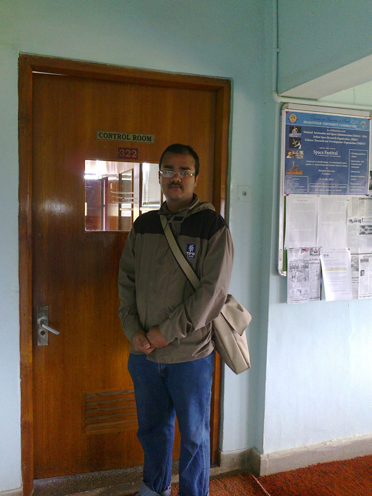

Post Doctoral Fellow
University of Wuerzburg, Germany
India
Hi! I am a post doctoral fellow at University of Wuerzburg, working with Prof. Dr. Alfio Borzi. My research interests are in inverse problems in fluid flows and tomography and optimal control problems
related to Fokker-Planck and Liouville processes.